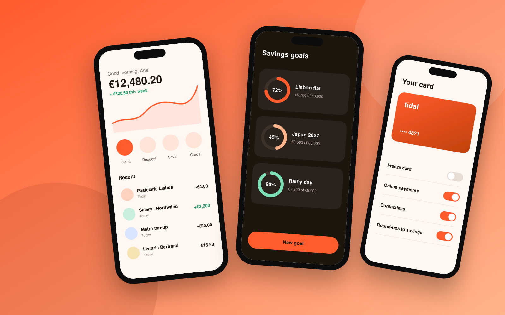
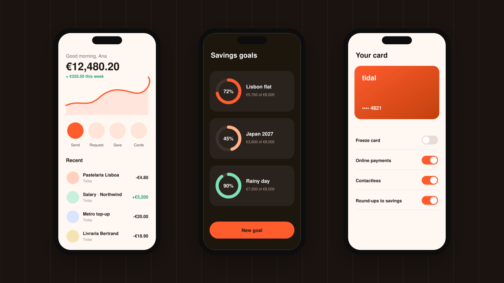
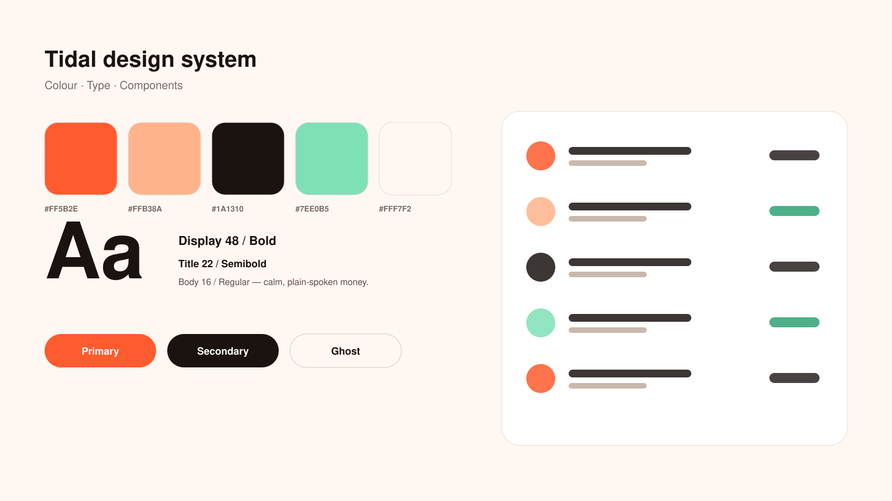

Case study · Mobile app · 2026
Tidal: banking that feels like calm water.

- Client
- Tidal Banking, Lisbon
- Role
- Lead product designer
- Timeline
- 9 months, 2025 – 2026
- Team
- 2 designers, 8 engineers, 1 PM
- Deliverables
- iOS & Android app, design system
Overview
Tidal had the features of a modern bank but the feel of a spreadsheet. Customers trusted it with their salary, then opened it with a knot in their stomach.
I joined as lead designer to rethink the app from the home screen out, with one goal: make checking your money feel like checking the weather — quick, clear and never alarming.
The challenge
The old home screen showed 14 numbers before you could find your balance. Notifications fired for every card payment, including the ones you were standing at the till for. Savings lived three taps deep.
Meanwhile the business needed to launch savings goals and shared accounts within the year — without adding more noise.
“I know my money is fine. The app just makes me feel like it isn’t.”— Customer interview, March 2025
Process
-
01
Listen
Twenty-two interviews with customers and the support team, plus a month of app-store reviews, tagged by theme.
-
02
Map
We mapped every money moment — payday, rent day, the night before a trip — and found where the app added stress.
-
03
Prototype
Three directions tested weekly with real customers. The calmest one won every round.
-
04
Ship
A phased rollout behind feature flags, with the design system built alongside so nothing drifted.
Screens


Results
+38%
weekly active users within three months of launch
4.8
App Store rating, up from 3.1
−52%
support tickets about “where did my money go”